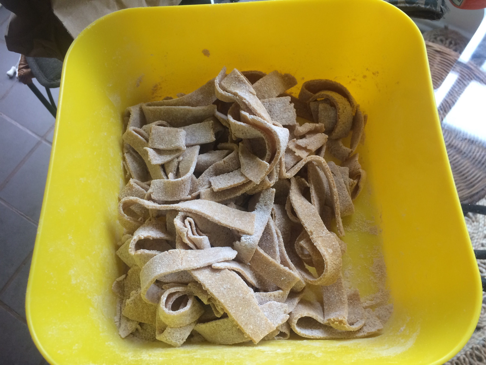

Artichoke Carbonara

Description
This is based on a delicious, simple Carbonara recipe from my friend,
Alex. With the addition of artichokes, it becomes a delightful way to
enjoy veggies!
Ingredients
- 1 lb pasta (I like fettucine but whatever you like works!)
- 5 egg yolks
- 1 lb bacon
- Parmesan cheese
- 1 bunch parsley
- 1 can artichoke hearts
- Salt and pepper
Steps
-
Cook the bacon as you wish. One option is in the oven at
275 until it appears appropriately browned. Reserve about
half of the bacon grease.
-
Cook the pasta according to the directions on the package.
Reserve some of the pasta water.
-
Prepare the sauce:
- Beat the egg yolks.
- Stir in about 2 Tablespoons of Parmesan.
- Add in the reserved bacon grease.
-
Add enough pasta water for the sauce to seem appropriately
saucy.
- Add in salt and/or pepper as you see fit.
-
Chop the artichoke hearts relatively finely.
-
Chop the parsley.
-
Crumble the bacon.
-
Combine the pasta and sauce, then add in the artichoke hearts,
most of the parsley, and bacon.
-
Serve with the reserved parsley and additional Parmesan. Bon
appetit!!
Back to home page